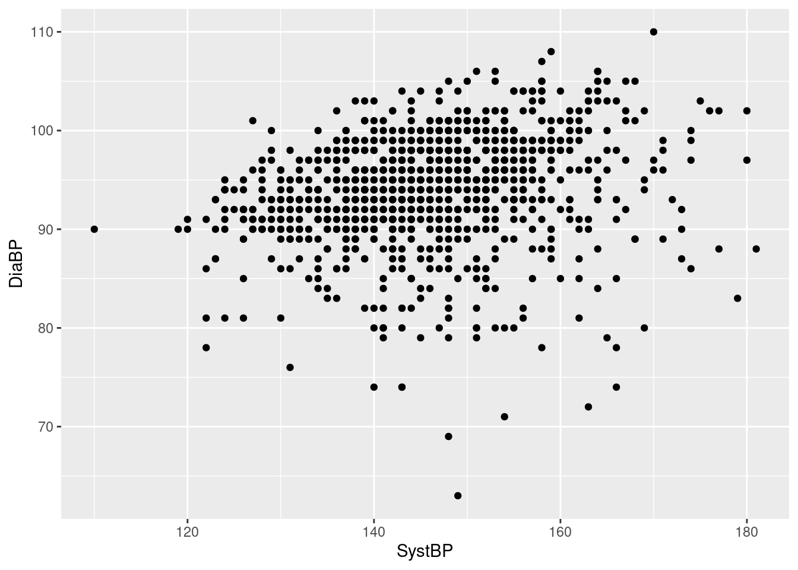
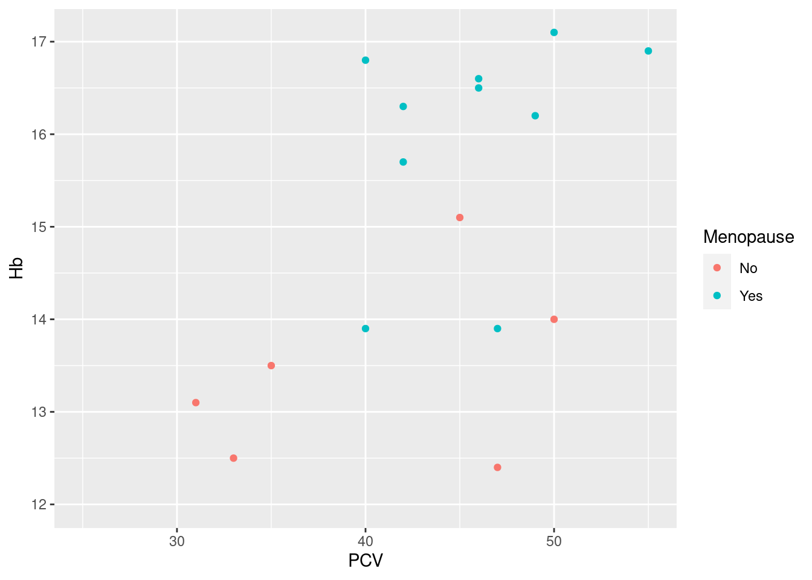

12 ggplot2: an alternative plotting system
12.1 Introduction
This is a very short introduction to using the package ggplot2 for plotting. For a thorough treatment, I recommend the book ggplot2: Elegant Graphics for Data Analysis by the package author Hadley Wickham, which is available online at https://ggplot2-book.org/.
12.1.1 Concepts & basic usage
In contrast to the base graphic system, where different plot types are packaged as separate functions(e.g. hist, boxplot), the ggplot2-package implements a Lego-like system where plots are assembled from individual components. We’ll start here with minimal plot examples, and add more functionality through the rest of the chapter.
Note that even if you are happy with the base system of graphics, the ggplot2-approach is interesting in its own right, as a different way of thinking about visualizing data.
A minimal graphical display in ggplot2 requires two steps:
Specify the data set which you want to use for plotting, and map the variables you are interested in to the available graphical information channels, using the functions
ggplotandaes.The graphical information channels are just the different ways in which we can add visual information to our display: if we start with an empty sheet of paper (at least as a mental model, in reality we will plot to a graphical device, as discussed in 11.4), it is completely white73. You encode information by adding blobs of ink to the paper, with different variables determining the position, color, shape and size of the blob; in reverse, when a reader looks at the collection of ink blobs, they will be able to decode the information they represent in terms of the original variables. ggplot2 refers to these information channels as aesthetics, and some common ones are listed in Table 12.1 below.
Note that this first step only does the setup for the actual plotting (mostly, see Exercises); any actually informative plotting is done in the next step.
Specify a geom (short for geometry in ggplot2) that takes the information from the first step and does some actual plotting (i.e. putting ink blobs on paper). Geoms are implemented in ggplot2 as functions starting with
geom_, and they take the steps required to turn the specifications into e.g. a histogram on the current graphical device.Table 12.2 below lists some of the more common geoms we are going to discuss in this chapter (there are many more geoms doing other stuff, both in ggplot2 and in its many. many extension packages). An important point is that the geoms understand at least a subset of the aesthetics specified in the first step: indeed, most geoms will absolutely require at least one (often more) mapped aesthetic, as well as be able to interpret a number of other optional aesthetics.
Let’s look at some examples.
Example 1: a boxplot of the age at baseline of the participants in the Harvest data set

Here, we use ggplot to specify the data set we want to use, as well as (via a call to function aes), what variable we want to display on the x-axis - this is the setup; we then add (literally, using the “+” operator) a call to the function geom_boxplot, which as you would guess, knows how to draw a boxplot.
What does the result look like? Well, it looks like a boxplot, with the box defined by the quartiles, the median indicated as a separator in the box, and the whiskers indicating the tails of the data distribution; in this case, we have a horizontal boxplot, because we mapped the variable of interest (Age) to the x-axis, and so all the statistics displayed (median, quartiles etc.) can be read off the x-axis.
Example 2: a histogram of the baseline ages in the Harvest data
The construction of the histogram differs from the boxplot above only in the choice of geom function: we still use the same data set, we still want to see ages on the horizontal axis, just the way that raw age information is translated into informative ink blobs is different, emphasizing different aspects of the data distribution: generally, we get more information from a histogram when the data set is sufficiently large (like here), though the out-of-the-box example with default settings we get here is neither especially attractive or informative (the problem is the too narrow class width, which leads to a jagged skyline-look that is more noisy than a good histogram should be; we’ll fix this in the next section).
Example 3: a barplot of the sex distribution in the Harvest data
This a plot of a categorical variable (the factor variable Sex in data frame hh); note that we do not have to tabulate the data so show frequencies as bars, as in base graphics: the geom_bar function knows that by default, it needs to run tabulation before producing a barchart of a discrete variable.
Example 4: a scatterplot of diastolic vs systolic blood pressure in the Harvest data

Here, we have to specify two aesthetics, as the function geom_point requires that both the horizontal (x-) and vertical (y-) position aesthetics are mapped to variables (which makes sense, in terms of a scatterplot). Otherwise, this follows the same logic as the univariable plots above.
Exercises:
What happens if you only call
ggplot, with the data and the mapping, but without adding a call to ageom_-function? Does this produce graphical output? Is it logically consistent? Interesting?What happens if you do not map a variable to the y-aesthetic in the scatterplot example above?
How can you flip the axes in the scatterplot example above?
How can you turn the horizontal example boxplot above into a vertical boxplot?
12.1.2 Practicalities
A big and important difference to base graphics is that ggplot2 creates R objects: plots can be assigned to variable names, stored in .RData files, modified, combined into a list etc. etc.
This saves the boxplot from our first example as an object called pl1. Note that while the assignment creates a plot object, it does not actually generate graphical output - if you want to see what the boxplot looks like, you have to evaluate the object at the command line (which is why we have a second row with just pl1 above).
Alternatively, we can also explicitly plot or print the ggplot2-object:
in order to get a graphical representation of pl1 on the currently open graphical device (i.e. the Plot-tab in Rstudio).
This is just consistent: if you type an expression like 3+4 directly at the console, R will evaluate it and directly show the result; however, if you assign the same expression to a variable name, say a <- 3+4, the result will be stored under the name a, but not displayed.
If you want to save a ggplot2 display to a file, you have the same options as for base graphics: you can doit manually, via the options in the RStudio Plot-tab or the R plotting window; alternatively, if you want to save a plot from the console or a script in a replicable manner, you can use a graphical device function (like jpeg or png) discussed in the previous chapter REF, with the same workflow: open the device - send plot to device - close device.
However, ggplot2 offers a wrapper function for the device-based approach called ggsave that offers useful arguments:
> ggsave("pl_harvest_sex.jpg", pl, width = 12.5, height = 12.5, units = "cm", scale = 0.8)
> browseURL("pl_harvest_sex.jpg")Note that we do not have to specify the device type (ggsave guesses from the file extension that we want a jpeg-file), and that we do not have to override an inadequate default resolution (argument dpi of ggsave is by default at 300).
| Name | Description |
|---|---|
| x,y | Horizontal and vertical position |
| color, colour | Color (of lines, outlines) |
| fill | Color (of shapes, areas) |
| shape | Shape (of plotting symbol) |
| size | Size (of plotting symbol) |
| alpha | Transparency (of lines/symbols) |
| Name | Description | Required aesthetics | Selected optional aesthetics |
|---|---|---|---|
| geom_point | Scatterplot | x, y | color, shape, size, fill, alpha |
| geom_histogram | Histogram | x or y | fill, color, alpha |
| geom_bar | Bar plot | x or y | fill, color, alpha |
| geom_boxplot | Boxplot | x or y | fill, color, alpha |
| geom_density | Density plot | x or y | fill, color, alpha |
| geom_smooth | Smoothing curve | x, y | color, alpha, linetype, linewidth |
| geom_linerange | Interval line | x/xmin/xmax or y/ymin/ymax | color, linetype, linewidth |
| geom_ribbon | Interval area | x/xmin/xmax or y/ymin/ymax | fill, color, alpha |
| geom_hline | Horizontal line | yintercept | color, alpha, linewidth, linetype |
| geom_text | Text label | x, y, text | size, family, color, angle, h/vjust |
| geom_label | Text label with background | x, y, text | size, family, color, angle, h/vjust |
12.2 More about aesthetics and geoms
12.2.1 Optional aesthetics
So far, we have only specified the minimally required aesthetics for each geom to generate basic plots. By mapping extra variables to optional aesthetics, we can add extra information and build considerably more complex and informative displays.
What optional aesthetics are available, and how they will be affect the plot, differs to some degree between geom-functions. How this works is probably most obvious for geom_point, but the general idea is always to somehow encode the extra variables mapped to the optional aesthetics in the base plot, often in a natural and intuitive manner (see boxplots below).
Example 5: incorporating information about sex in the scatterplot of diastolic vs systolic blood pressure in the Harvest data
So geom_point uses different colors for males and females, and despite some over-plotting, we see that the blood pressures show mild correlation for both groups, though the lowest diastolic pressures seem to be almost exclusively men - and all we had to do was to add the extra mapping color=Sex in the call to aes; all the rest was handled by geom_point:
- identify a range of reasonable default colors for the levels of the mapped variable (here just two, but can be more),
- use the chosen colors when creating a scatterplot,
- add an informative legend linking the colors to the levels of the mapped variable at the side of the plot.
You may want to change the default colors or placement of the legend based on your preferences or publisher’s requirements, but for a first, effectively zero-effort shot at visualization this is extremely convenient and informative (and we will see how to change appearances below).
Note that we can map other variables to other optional aesthetics at no extra cost, and we still get a set of informative legends for free (even if the resulting plot is a bit crowded here).
Example 6: show different boxplots of age by sex, and by sex and smoking status
We can simply map a grouping variable to the “other” axis (the one not showing the continuous variable of interest) to get side-by-side boxplots:
Here, we see that while the age range is comparable for men and women, female participants tend to be older than male participant (quartiles & median shifted upwards).
We can add another level of grouping by mapping the variable Smoking to the aesthetic fill, to get separate boxplots for smokers and non-smokers (distinguished by color) for both women and men.
Clearly, there are few if any differences in age distribution between smokers and non-smokers when broken down by sex.
Note the use of the aesthetic fill here instead of color - in ggplot2, the former generally refers to the color of an area, whereas the latter refers to symbols, lines and outlines.
Example 7: add smoking status to the barchart of the sex distribution
This uses the same mechanism and and a similar intuition as the boxplot example above, by mapping the extra grouping variable to fill, which then colors the original bars according to the number of smokers and non-smokers (legend included).
(You may have expected side-by-side bars, as for the boxplots above - as we will see below, that is abosultely an option, just not the default option in this case.)
Exercises:
Re-run the scatterplot example, but now map a continuous variable like BMI to the color aesthetic. What happens? Is this (potentially) meaningful and/or interesting?
Re-run one of the boxplot examples, but with horizontal side-by-side plots.
12.2.2 Multiple geoms
While you need to specify at least one geom to create an informative plot, you can add additional geoms to annotate or extend the basic plot. The mental model for this is that each new geom draws on top of the previous geoms, adding a new layer of ink on top.
Example 8: add a smoothing curve on top of the blood pressure scatterplot
We see a reasonably fat blue smoothing curve added on top of the previous scatterplot, indicating a mild correlation between systolic and diastolic blood pressure, with little curvature. Note that:
the smoothing line is solid, and covers the scatterplot symbols it runs across, as expected when an upper layer in a plot covers a lower layer;
in addition to the smoothing curve, we also get (point-wise) 95% confidence intervals around the curve, indicated by the slightly darker grey shading - while the shaded area is very tight in the middle of the data range, indicating little uncertainty about the shape of the curve, it is somewhat wider at the ends, where we have less data (also, very sensibly, the shading is semi-transparent and does not obscure the scatterplot, which would otherwise make the confidence area visually too strong);
geom_smoothuses different default smoothing methods depending on sample size - here, for a reasonably large data set, it uses a GAM (generalized additive model), as indicated by the warning on top of the plot (more about smoothing methods in the next section).
Example 9: plotting means with confidence intervals
Given a data frame with
> ## FIXME: DATA PREP
> library(DescTools)
> agg1 <- aggregate(Age ~ Sport, data = hh, FUN = MeanCI)
> agg2 <- cbind(data.frame(Sport = agg1[,1], agg1[,2])
> ggplot(agg2, aes(x = Sport, y = mean, ymin = lwr.ci, ymax = upr.ci)) + geom_point() + geom_linerange()Exercises:
- Drop the
geom_point-call from the scatterplot example above, only keeping thegeom_smooth-call - does this work? Make sense?
12.2.3 Using geom arguments
So far, we have used the geom functions without any arguments, simply as e.g. geom_boxplot(). This is not because the geoms have no arguments - they do, some that are common for all geoms (as we will see below when talking more about layers) and others that are specific to the graphical ouput that a geom produces. Consequently, the empty set of parentheses () at the end of the function call indicates that we simply call the geom with arguments set to their default values76.
(Arguably, a lot of the cleverness of the ggplot2 system lies in providing reasonable defaults for almost every aspect of the display, as well as in setting up things in such a manner that these defaults are available to all functions in the package.)
Example 10: a histogram with nicer class / bar widths
As we have seen above, the default histogram generated by geom_histogram is actually not all that great. In practice, you will need to set your own width, either directly (via argument binwidth=) or indirectly (via argument bin=). For this example, a width of five years for the Harvest baseline age seems reasonable.

We see a somewhwat skewed distribution of ages between ca. 25 and 45, with a pronounced peak around 40, and a few younger/older participants.
Example 11: change the arrangement of bars in a barchart with fill-mapping
As mentioned above, the default behavior for a barchart that shows sub-groups by mapping an extra grouping variable to the fill-aesthetic is to stack the different colors on top of each other. The actual arrangement of the colored bars is actually regulated by the value of the argument position= in geom_bar:
position="stack"is the default and just stacks them on top of each other,position="dodge"puts them side-by-side,position="fill"is interesting, in that it not only changes the appearance of the plot, but also the interpretation: the color bars are still stacked on top of each other, but the stacked bars are now stretched to fill all the available vertical space - in other words, all stacked bars have the same height, and the area of the colored bars now represents the proportions of the extra grouping variable rather than the counts.

So here we see that while the number of smokers differs between men and women, as seen above, the actual proportion of smokers is almost identical (around 20%).
Note that this an example where the logic behind constructing a plot using ggplot2 is still sound, but not exactly intuitive, and does not map especially well to graphical ideas rooted in the base system.
Example 12: change the default smoothing function in geom_smooth
As seen before, a general smoothing curve for the blood pressure scatterplot has little curvature, i.e. is almost a straight line; if we want to compare the curve with a straight line fit, we can slightly abuse geom_smooth via the argument method=:
While the resulting “curve” (straight line) is not a smooth in the traditional sense, it still serves as a handy graphical summary of the relationship between systolic and diastolic blood pressure. This is achieved by specifying a linear model fit via function lm described in REF77
Exercises:
- Re-do the blood pressure scatterplot with a smoothing function of your choice, but without the shaded area indicating the 95% confidence interval around the fit.
————–FIXME
all together - multi aesthetic, multi-geom, with arguments? E.g. scatter by sex/color with lm smooth? geom_hline? geom_ribbon with transparency?
Example 13:
Exercises:
Map a quantitative variable, e.g. Age, to color; what happens?
Can use geom_smooth without geom_point()?
12.3 Splitting plots by sub-groups
Another way of adding or highlighting extra information in a graphical display is to split the display into several panels, depending on the value of one or several variables in the data set of interest. We have already seen examples for this, either using the base function coplot to generate conditioning plots, or doing it manually ourselves (REF).
ggplot2 refers to the divisions of the plotting device as facets rather than panels, but makes it possible to split any graphical display using one of two functions:
the more general
facet_wrapsplits the display according to the specified variable (or variables) and arranges them in a rectangular pattern across the current graphical device,the more specialized
facet_gridalso splits the display according to the specified variables, but arranges them as a fixed grid on the device.
facet_wrap works best with one variable defining the facets, whereas facet_grid generally works best with two grouping variables with a small number of levels and all possible combinations observed, as seen below.
Example 14: histogram of age by physical training status
We get four histograms, one per level of the Sport variable, in a 2x2 arrangement; the ordering of the histograms follows the ordering of the levels from least active (None) to most active (Compet) from top left to bottom right, filled row-wise. By default, all facets share the same horizontal and vertical scaling: here, this makes it here easy to compare the number of participants per facet - clearly, most participants are not physically active, and the other levels have roughly the same number of participants each; also, the strong spike around 40 years of age that we have already seen above seems to be limited to the non-sporty sub-group.
Note that it makes sense to have a different mechanism from mapping to aesthetics for splitting a display in this manner: while a faceting variable strongly affects the appearance of the display, not actual values, or transformation of its values, are shown, so there is really no way to map the faceting to an aesthetic (see Exercise 2 below if in doubt).
Example 15: scatterplot of systolic and diastolic blood pressure by sex and smoking status
Here, we get again four facets, but now based on the combinations of the two variables Sex and Smoking, which each have two levels; the 2x2 combinations of values are arranged with the levels of smoking forming the columns of the grid, and the levels of sex forming the rows. Consequently, we get a side-by-side comparison of non-smokers and smokers by sex, or equivalently, a top-to-bottom comparison of females and males by smoking status. For our example, it appears that i) there is a moderate linear relationship between systolic and diastolic blood pressure for all combinations of smoking and sex, ii) diastolic blood pressures tend to be lower among smokers, iii) systolic blood pressure are somewhat downwards skewed among the non-smokers, and iv) males have a wider range of diastolic blood pressures than females.
Both faceting functions have options for modifying the display and arrangment of the sub-plots, so that you can
- have separate instead of shared horizontal and vertical axes (
scales=, see below), - change the order in which facets are drawn (
as.table=)), - modify the labels of the facets (
labeller=) - (for
facet_wraponly), determine the number of rows and columns of facets (nrow=,ncol),
among other things (as usually, check with ?facet_wrap and ?facet_grid for what is possible).
Example 16:: histograms of age by level of physical activity, with separate y-axes, arranged as a 1D strip of panels, and adding the name of the variable to the label
> ggplot(hh, aes(x = Age)) + geom_histogram(binwidth = 5) + facet_wrap(~Sport, scales = "free_y", nrow = 1,
+ labeller = label_both)By allowing a separate y-scale, each facet can use all of the available vertical space for its histogram. Compared to Example 14 above, a lot of white space is eliminated, and we get a closer look at the age distribution in the rare categories of physical activity, because the counts are no longer compressed by the scale of the most common category - the price for this is that the different frequencies between the categories are no longer as prominent as above, we have to actually look at the labels of the y-axis to understand this78.
Exercises:
- Construct a plot where
facet_wrapis used with a continuous variable like heart rate or BMI. Is this useful?
- What happens if you use a variable both for faceting and mapping to an aesthetic - is this informative? Demonstrate using an example or speculate freely.
- Swap the rows and columns in Example 15 above. Is this intuitive?
- The comment on Example 15 above makes a number of rather detailed claims i)-iv) about the relationships between the variables in the plot. For each of these claims, construct a new plot that clarifies / illustrates whether it is actually correct. Hint: the new plots do not need to be scatterplots, and can use extra geoms for illustration, but will likely involve facetting of some kind.
12.4 Changing the default appearance
A reference plot for modification
12.4.1 Scales
Scales are an important concept in the ggplot2 graphical system. It is all well and good to generically map a variable to an aesthetic, say smoking status to color, but at some point before the ink hits the paper, or the current hits the transistor switch of the pixel, we have to determine exactly which color should be applied, and how this color relates to the original data values (“N” or “no” or “non-smoker” etc.). This concrete mapping of raw data values to actual colors, line types etc. is managed in ggplot2 by scales. Indeed, for every aesthetic that you include in a ggplot-object, there is a corresponding scale attached.
You’ll notice that at this point, we have already generated some quite sophisticated plots without knowing or caring that scales exist. Indeed, one of the selling points of ggplot2 compared to base graphics has been that we do not have to worry about details of color, symbol shape, line width etc. - and this is because every aesthetic comes with a default scale attached. In other words, many of the reasonable default settings that make ggplot2 convenient to work with are implemented via these default scales. Or to look at it another way, many of the default settings for color, shape etc. can be modified by overriding the default scale.
For this short introduction, we are not going to look deeply into how this works79. Instead, I’ll just demonstrate some common use cases; the basic idea is that scales are implemented in the finest R tradition as functions, and that you override the default scale by adding a scale function to the plot object via + (same as for geoms).
The number and variety of scale functions is somewhat daunting, but note that the naming convention very generally follows the pattern scale_<aesthetic>_<name>, where <aesthetic> is the name of the aesthetic you want to modify, and the <name> characterizes what the scale does. E.g. if I want to change anything about a mapped fill-color, I will look for a function starting with scale_fill_, and if I want to choose one of the Brewer color schemes discussed in REF, I would pick the function scale_fill_brewer.
Example 17: change default colors for a grouping variable, and modify the name of the legend as well as the grouping labels
> pl_hemo + scale_color_brewer(palette = "Set1", name = "Status", breaks = c("No", "Yes"), labels = c("Pre-menopausal",
+ "Post-menopausal"))Here, the specific task of picking a Brewer color palette is delegated to the scale function scale_color_brewer, specifying the Brewer palette Set1. The arguments name, breaks and labels affect the display of the legend for the color aesthetic, and are similar for most scale functions: name is simply the heading used for the legend; breaks refers to the values of the original data, and labels lists the labels displayed in the legend corresponding to the data values (so No -> Pre-menopausal).
Example 18: use a scale to remove all data points with hemoglobin levels under 12 g/dl from the scatterplot

As the hemoglobin levels are mapped to the y-axis, we can use the default scale scale_y_continous and pass the desired limits as an argument (as we only want to filter at the lower end of the data range, we set the upper limit to NA). Consequently, the scale function maps all values outside of the limits to NA (which triggers the warning at the top of the plot). Note that this happens before the rest of the plot is constructed, so any derived quantities (smoothing curves, the quartiles for a boxplot etc.) are calculated without these data points (unlike coord_-functions, see below).
While this is a legitimate application of scale functions, this is common enough that ggplot2 includes the small helper functions lims, xlim and ylim that provide the same service wihout reference to scales. We could have constructed exactly the same plot as
Example 19: use the log10-values of hemoglobin in the scatterplot
Again, we want to affect the display of the y-axis, so we use the scale function scale_y_continuous, bit set the argument trans= to a non-default value. Note that this is superior to just log10-transforming the data: the labels of the y-axis are still in the original units, only now spaced on alogarithmic scale.
Again, this is common enough to have a shortcut: we would get the same plot using
Exercises:
- Find out how many scale functions (names starting with
scale_) are defined inggplot2. - Modify the scatterplot of the Harvest data in Example 5 to i) only show data points with diastolic blood pressures above 80 and systolic blood pressures under 175, ii) to label groups as “Female” and “Male”, and iii) change the color palette to one of the available Viridis-palettes.
12.4.2 Fixing aesthetics
Sometimes, there is an aspect of the plot where we want to have a very specific look, not something based on the content of the data or the default scales: sometimes, we do want a blue histogram, or a barchart in university colors. In ggplot2, this is referred to as fixing an aesthetic (instead of mapping it to a variable in the data).
Possible use cases include:
fixing the
colorandfillaesthetics to specific colors; while this is obvious and easy, it is not all that common, as it requires exactly the kind of fiddling with color codes that we want to avoid, and you are generally better off using a scale function and some pre-defined palette, as described above;adding horizontal or vertical reference lines to a plot (often at zero or one), using one of
geom_hlineorgeom_vline, with the respective aesthetics ofyinterceptandxintercept;making colors transparent, to reduce the visual impact of overplotting, by fixing the
alphaaesthetic (by default one, as in fully solid colors, with smaller values down to zero indicating more transparency).
Aesthetics are fixed by assigning them the desired value in the call of a geom, but outside of a an aes function call, see examples below.
Example 20: for our patient cohort, 12 g/dl is a clinically relevant threshold for low hemoglobin
Note how the assigment yintercept = 12 is a direct argument to the call of the geom_hline-function, not wrapped into a call to aes.
Actually, reference lines are a situation where you may want to also fix other aesthetics to get the kind of line you like; me, I like them darkish gray and a bit thicker than default:
Example 21: density plots for different groups are a good example where reduced transparency increases the readability of the plot; say we want to compare the distribution of heart rates between women and men in the Harvest data:
We see that the distributions are quite similar, only that the heart rates among women are ca. 5 bpm higher - we can assess the similarity of the distribution curves because the women’s density can be seen through overlaying men’s density; without introducing transparency, most of the women’s density would be covered.
Exercises:
- Create a boxplot of the age at baseline in the Harvest cohort with changed fill- and outline color.
- Add a red (instead of default blue) smoothing curve to the scatterplot of hemoglobin vs packed cell volume.
- Use the function
geom_ablineto add a linear regression line to the Hb vs PCV scatterplot, and compare the result with the linear smoothing curve generated withgeom_smooth. - Create a bar chart of the levels of physical activity in the Harvest data, using KI Dark Plum (RGB 79/4/51) as the fill color.
12.4.3 Themes
We have seen that geoms and scales handle the aspects of a plot that can be mapped to the underlying data, at least in principle (even if we e.g. decide to fix an aesthetic as seen above). There are still numerous graphical aspects of the plot that will affect how it is perceived by the viewer: the presence and placement of titles and labels, the font family and font face used for text, the presence and look of a background with or without gridlines, and the appearance and placement of legends: these non-data related aspects are referred to as plot elements, and these elements are collectively assembled and manipulated as themes.
In the best spirit of ggplot2, themes share three properties with geoms and scales:
Access and manipulation are handled via functions following a naming pattern (here, starting with
theme_)There is a reasonable default theme that will be applied if nothing else is specified (here,
theme_graywith its very recognizable gray background and white reference lines).The default theme can be overridden either completely or partially by adding a call to a theme-function to a defined
ggplot2object (e.g. as+ theme_bw()).
Functionally, themes cover a similar set of graphical parameters as the function par for base graphics, but where par sets the parameters for a graphical device, and needs to be called before the plotting function, themes define properties of a plot, regardless of the device, and can be added after a plot was defined as an object.80
Complete themes The easiest way to change the appearance of a plot is to use complete themes, which set defaults for all plot elements in one function call. ggplot2 comes with a set of basic themes, see ?theme_gray for a list and below for some examples. Additionally, there are many add-on packages that define their own sets of themes, see below.
Here, we do not have the usual gray background with reference lines, instead we have a white background with black axes. Some more included themes:
Changing the default theme There is a sizable minority of users81 who really dislike the gray default theme. Instead of having to override the default theme for every single plot they create, they can use the function theme_set to change to a different default theme, so that all ggplot2-objects created without a specific theme will be using the new default:
Note that still works, even though we have defined pl_hemo before we changed the default: the settings of the default theme are not ‘frozen’ into the plot object at creation, instead no explicit theme settings are recorded with the plot, which implies “use whatever default is in place at the time of display or saving to file”. If however we set a theme explicitly as part of the plot definition, the default will simply be ignored:
The new default theme will persist until the R session is closed82, unless you re-set it to its default by calling theme_set again:
Changing specific elements Sometimes, we only want to change specific elements in a theme. Similar to geoms and scales, we can do this by specifying the elements we want to change as arguments to a function call, in this case simply the function theme (no underscore, no further name).
Note that there are currently 97 different elements / graphical parameters that can be modified in a call to theme83, so while this clearly allows fine control over how things will look, this can get technical. Here, I will demonstrate two specific use cases, one of which is reasonably common, and the other occurrs occasionally
Example 22: change the position of the legend
This is straightforward, and is often appropriate for a wide plot with a reasonably long legend, where the default legend position on the right uses a lot of white space. Other parameters that will affect the appearance of a legend:
> names(theme_get()) |>
+ grep(pattern = "^legend", value = TRUE)
[1] "legend.background" "legend.margin" "legend.spacing" "legend.spacing.x"
[5] "legend.spacing.y" "legend.key" "legend.key.size" "legend.key.height"
[9] "legend.key.width" "legend.text" "legend.text.align" "legend.title"
[13] "legend.title.align" "legend.position" "legend.direction" "legend.justification"
[17] "legend.box" "legend.box.just" "legend.box.margin" "legend.box.background"
[21] "legend.box.spacing" (see ?theme for details)
Example 23: change the font of the text in the plot
Rarely, a picky journal may require a specific font to be used in plots. In the example above, the default (sans-serif) font is replaced with (serif) Times New Roman, so the letters in the axis labels, legend title and -labels now all have little tails.
There are a couple of things to unpack here:
We do not simply specify the name of the new font as an argument, but we rather use another access function called
element_text. This is simply more efficient - we have many different text elements in the plot, so having a separate argument inthemefor setting the font, size, color etc. of each of these text elements would be insane; instead, we bundle all the relevant information into one object84, where all individual properties can be modified via the access function. E.g. the defaulttext-element fortheme_grayis defined as> theme_gray()$text List of 11 $ family : chr "" $ face : chr "plain" $ colour : chr "black" $ size : num 11 $ hjust : num 0.5 $ vjust : num 0.5 $ angle : num 0 $ lineheight : num 0.9 $ margin : 'margin' num [1:4] 0points 0points 0points 0points ..- attr(*, "unit")= int 8 $ debug : logi FALSE $ inherit.blank: logi TRUE - attr(*, "class")= chr [1:2] "element_text" "element"So we have nine modifiable properties here, including e.g. horizontal and verical alignment of the text and the size of the margins on all four sides of the text box.
We use the argument
text=to set the font for all text elements in the plot. This works because the plot elements that are accessed bythemehave a clever hierarchical structure, where all text elements inherit fromtext=:axis.text=for the axis tick labels,axis.title=for the axis titles,legend.title=for the legend title, andlegend.text=for the individual item labels in the legend; so instead of having to specify a new font for each element separately, we can just set them all viatext=, which is of course the most obvious use case.[^element_hierarchy]
The combination of access functions and the hierarchy/inheritance makes this an extremely flexible setup - if e.g. for some bizarre reason we want to i) set a new font for all text elements in a plot, ii) use bold font only for the title of the x-axis, we can do this quite efficiently via
> pl_hemo + theme(text = element_text(family = "Times"), axis.title.x = element_text(face = "bold"))Comparable access functions and hierarchies exist for other plot elements (titles, lines, rectangles, margins), see ?theme and ?element_text.
Exercises:
- Add the ‘empty’
theme_voidto one of the previously defined plots. Which aspects of the plot are no longer displayed? Which aspects are preserved? Interpret these aspects as either elements or aesthetics.
12.4.4 Other
This is a somewhat random collection of occasionally useful bits and pieces.
Plot annotation ggplot2 offers a number of ways to add explanatory (non-data) text to a plot via the helper function labs
For convenience, we can also set labels for other aesthetics, something that we would usually do via a scale function:
For even more convenience, we can use wrapper functions xlab, ylab and ggtitle to explicitly set some of the annotations available through labs85
Zooming in On top of geoms, scales, themes etc., ggplot2 also includes the concept of coordinate systems. We will not not not discuss this here, but there is one neat hack that allows you to zoom in on a rectangular are of an existing plot using coord_cartesian:
This is different from using limits in scales or xlim that we have seen above, where the limits are used to filter the underlying data, and the plot is re-built using the filtered data set: here, the plot is built with the original data, and the call to coord_cartesian just zooms in on the specified part of the plots; as a consequence, summary statistics like the linear regression smoother added here are calculated for the original data, not just the data displayed (indicated visually by the regression lines not being truncated, but continuing out of frame).
Messing with axes We can use scale_x_reverse and scale_y_reverse to reverse the direction of the plot axes (i.e. right to left instead of left to right, and top to bottom instead of bottom to top). Similar, we can use function coord_flip to exchange x- and y-axis to “flip” (transpose a plot)86.
Exercise: Reverse the direction of the x-axis on the Hb vs PCV scatterplot. Bonus: put the reversed x-axis at the top of the plot instead of the bottom.
12.5 Complex layering and annotation
We have already combined multiple geoms in a plot, layering their graphical output on top of each other. In this approach, each geom uses the same data and mapping of variables to aesthetics as set in the defining ggplot function call - the geoms inherit data and mapping. However, the logic underlying ggplot287 allows for different data and different mapping in each layer of a plot88. This is a cool way of thinking about graphical data representation, as well as a useful concept for understanding how ggplot2 hangs together - however, for the usual reasons, we will focus on a concrete use case, in this case how to use layers to annotate plots.
Example 24: annotate a subset of points in a data set. As discussed above, a threshold of 12 g/dl is a clinically relevant cutoff for hemglobin levels that are too low; here, we want to add an identifying label to each point below this threshold.
So the basic idea here is to use geom_text to add the identifier for the specified subset of the data. This requires two extra pieces of information (arguments) when calling geom_text:
As outlined above, we need to specify the data where we want to have the annotation. As expected, we do this via the
data=argument and a call to thesubsetfunction.geom_textrequires three aesthetics: a horizontal and vertical coordinate indicating where to put the label (aestheticsxandy), put also the actual text to put there (aestheticlabel). While the x- and y-coordinates have been mapped in the original plot objectpl_hemo, whichgeom_textinherits by default, we need to specify an additional mapping for the text; this we do as before via a call toaesthat maps thelabelaesthetic to the variableIDin the data frame generated bysubset.
The resulting plot above does in principle what we want it do, i.e. identify the low hemoglobin levels. However, it has a couple of less attractive features:
the labels are in the same color as the data points, indicating the menopausal status of the women; here, this is not really what we want, and hard to read to boot;
somehow, the legend to the right of the plot got an extra text symbol on top of the data points, which is not pretty;
the labels are smack on top of plotting symbols, which makes them hard to read.
Fortunately these defects are easy to fix by a combination of old and new magic:
> pl_hemo + geom_text(data = subset(hemo, Hb < 12), aes(label = ID), color = "black", nudge_x = 0.5)The old magic, which we have discussed above, is to fix the color aesthetic to black: as geom_text supports the color aesthetic (i.e. we can have labels in different colors depending on data), the mapping to variable Menopause was inherited from pl_hemo. We override this inheritance by fixing the color aesthetic (i.e. assigning it a fixed value outside of the call to aes), and that takes care both of the color of the ID labels and the somewhat messed up legend.
The new magic is the use of the argument nudge_x for shifting the labels horizontally from the exact location specified, in this case by six months to the right, aka +0.5 years on the horizontal age axis (getting the exact position of labels right is often tricky - here, a simple nudge_x and a reasonable guess for the shift works ok; there are other arguments to geom_text that can help, but the most robust/least guesswork solution is implemented in package ggrepel, see below).
Example 25:
> anndf <- data.frame(xcoord = c(25, 25), ycoord = c(11, 13), text = c("Too low", "Sufficient"))
> anndf
xcoord ycoord text
1 25 11 Too low
2 25 13 Sufficient
> pl_hemo + geom_hline(yintercept = 12, color = grey(0.6), size = 1.2) + geom_label(data = anndf, aes(x = xcoord,
+ y = ycoord, label = text), hjust = "left", inherit.aes = FALSE)Exercises::
Or whatever background color you prefer.↩︎
See
vignette("ggplot2-specs", package = "ggplot2")for more details.↩︎A list of available geom functions (assuming that
ggplot2has been loaded):> ls("package:ggplot2", pattern = "^geom_") [1] "geom_abline" "geom_area" "geom_bar" [4] "geom_bin_2d" "geom_bin2d" "geom_blank" [7] "geom_boxplot" "geom_col" "geom_contour" [10] "geom_contour_filled" "geom_count" "geom_crossbar" [13] "geom_curve" "geom_density" "geom_density_2d" [16] "geom_density_2d_filled" "geom_density2d" "geom_density2d_filled" [19] "geom_dotplot" "geom_errorbar" "geom_errorbarh" [22] "geom_freqpoly" "geom_function" "geom_hex" [25] "geom_histogram" "geom_hline" "geom_jitter" [28] "geom_label" "geom_line" "geom_linerange" [31] "geom_map" "geom_path" "geom_point" [34] "geom_pointrange" "geom_polygon" "geom_qq" [37] "geom_qq_line" "geom_quantile" "geom_raster" [40] "geom_rect" "geom_ribbon" "geom_rug" [43] "geom_segment" "geom_sf" "geom_sf_label" [46] "geom_sf_text" "geom_smooth" "geom_spoke" [49] "geom_step" "geom_text" "geom_tile" [52] "geom_violin" "geom_vline".↩︎
In order to become familiar with available arguments in geom functions, you will need to familiarize yourself with their documentation, but you were expecting this, weren’t you?↩︎
Indeed, via a combination of arguments
method=andformula=, you can use most modelling functions in R, as long as they support a standardpredict-method; see?geom_smooth, of course.↩︎In other words, the white space generated by the shared y-axis was not simply wasted, but used to emphasize the difference in counts between categories, at the price of squishing three of four histograms flat. By allowing separate y-axis, we now use the previously white space to emphasize a different aspect of the data, namely the different/similar shapes of the histograms.
In the right context, “nothing” can be informative.↩︎
For background reading, consult https://ggplot2-book.org/scales and https://ggplot2-book.org/scales-guides↩︎
This reflects one of the fundamental differences between base graphics and
ggplot2- in this sense,ggplot2reflects the object-oriented nature of R, as discussed in REF, better than the somewhat ad-hoc, dumping-plot-to-a-device base graphics.↩︎Besides a large majority of users who do not really care.↩︎
Or the
ggplot2package is detached from the search path↩︎Number of plot elements in your currently installed
ggplot2version:.↩︎
Yes, this object is essentially a list (with some decorations), how did you guess?
As a matter of fact,
ggplot2plot objects are also lists:.↩︎
The code for these wrapper functions is very straightforward, e.g.
> ggplot2::ggtitle function (label, subtitle = waiver()) { labs(title = label, subtitle = subtitle) } <bytecode: 0x5ed5e73c4760> <environment: namespace:ggplot2>Not more really more complicated than our own basic functions in Section 6.3.↩︎
Use of
coord_flipis often lazy - you have built a complex multi-geom plot with scale changes etc., and realize at the end that the plot would look better flipped, so instead of going back and carefully changing mappings, scales etc. along the way, you just flip the final plot.↩︎This underlying logic, a systematic, abstract way of thinking about how to represent data graphically, was originally developed by Leland Wilkinson and is described in his book The Grammar of Graphics available e.g. from Google Books. A short, accessible description by Hadley Wickham is available at http://vita.had.co.nz/papers/layered-grammar.pdf.↩︎
Indeed, the working horse function that implements the geom functions we use is
layer.↩︎